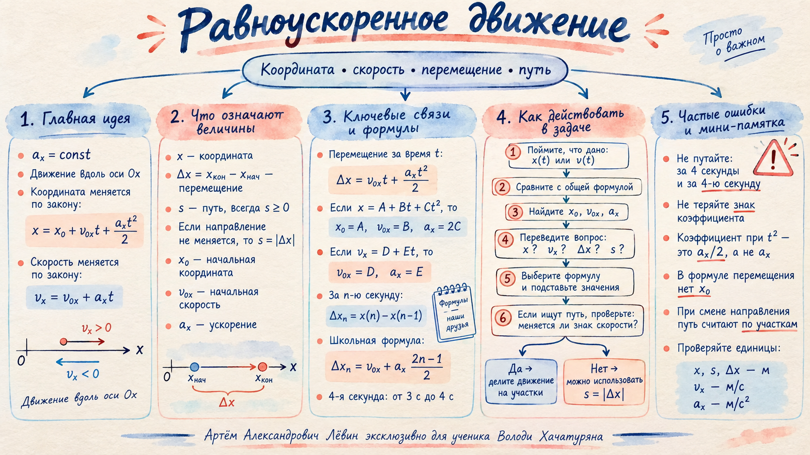

Уравнение уже содержит данные задачи
Запись вида x = A + Bt + Ct² нужно сравнить с общей формулой равноускоренного движения. Тогда каждое слагаемое получает физический смысл.
Если x = A + Bt + Ct², то x₀ = A, v₀ₓ = B, aₓ = 2C.
Пример: x = 6t²
Отсутствующие слагаемые равны нулю:
Значит, x₀ = 0, v₀ₓ = 0, а aₓ/2 = 6.
aₓ = 12 м/с².
Пример: x = 6 − 3t
Коэффициент при t равен −3. Знак относится к числу и не отделяется от него.
x₀ = 6 м, v₀ₓ = −3 м/с, aₓ = 0.
Самопроверка: если в уравнении нет слагаемого, соответствующий коэффициент равен нулю; если коэффициент отрицательный, знак сохраняется.
«За 4 секунды» и «за 4-ю секунду» — разные промежутки
Четвёртая секунда начинается в момент 3 с и заканчивается в момент 4 с. Поэтому перемещение за n-ю секунду находится как разность координат в конце и начале этого секундного интервала.
Отдельная секунда: Δxₙ = x(n) − x(n−1), если время измеряется в секундах.
Это компактная школьная запись для секундных интервалов; она следует из разности x(n) − x(n−1).
Условие для пути: формула даёт перемещение. Чтобы назвать его путём, проверьте, что внутри этой секунды тело не меняло направление.
Увидеть n-ю секунду на шкале →Разобранная задача: 4-я → 7-я секунда
Дано: v₀ₓ = 2 м/с, перемещение за 4-ю секунду равно 2,7 м.
Отсюда aₓ = 0,2 м/с².
За 7-ю секунду: 3,3 м.
Скорость читается ещё проще
Если дана формула vₓ = D + Et, то D — начальная скорость, E — ускорение. А фраза «скорость равна нулю» сразу превращается в условие vₓ = 0.
Для vₓ = 3 − 2t: v₀ₓ = 3 м/с, aₓ = −2 м/с².
Пример: x = 12t − 2t²
По коэффициентам: v₀ₓ = 12 м/с, aₓ = −4 м/с². Поэтому
В момент остановки 12 − 4t = 0.
t = 3 с.
Из скорости получить перемещение
Для vₓ = 3 − 2t имеем v₀ₓ = 3 м/с и aₓ = −2 м/с². Тогда
Путь требует проверки направления
Перемещение равно xкон − xнач и может иметь любой знак. Путь всегда неотрицателен. Если скорость меняет знак внутри рассматриваемого интервала, путь складывают по участкам.
Без смены направления: s = |Δx|.
Со сменой направления: найдите t*, для которого vₓ(t*) = 0, затем сложите длины двух участков.
Например, для третьей секунды это [2; 3] с.
Найдите, попадает ли момент vₓ = 0 внутрь интервала.
Путь равен модулю перемещения.
Разделите движение в точке остановки и сложите пути по частям.
Ошибки, которые реально меняют ответ
Перед завершением задачи проверьте три вещи: знак коэффициента, смысл временного интервала и различие между путём и перемещением.
Во втором случае нужен интервал от 3 до 4 с.
Ускорение получают удвоением коэффициента.
В x = 6 − 3t начальная скорость равна −3 м/с.
Начальная координата сокращается при вычислении разности координат.
Фразы условия → обозначения
| Фраза | Что записать |
|---|---|
| «Зависимость координаты от времени…» | дано x(t) |
| «В какой момент времени…» | ищем t |
| «Проекция скорости равна нулю» | vₓ = 0 |
| «Перемещение за первые 5 секунд» | Δx = x(5) − x(0) |
| «За четвёртую секунду» | интервал [3; 4] с |
Наглядная памятка к занятиюОткрыть
Краткая акварельная карта с формулами, алгоритмом и типичными ошибками.

Мини-квиз
1. В уравнении x = A + Bt + Ct² чему равно ускорение?
2. Какой интервал соответствует четвёртой секунде?
Самопроверка
Отмечено: 0 из 6.